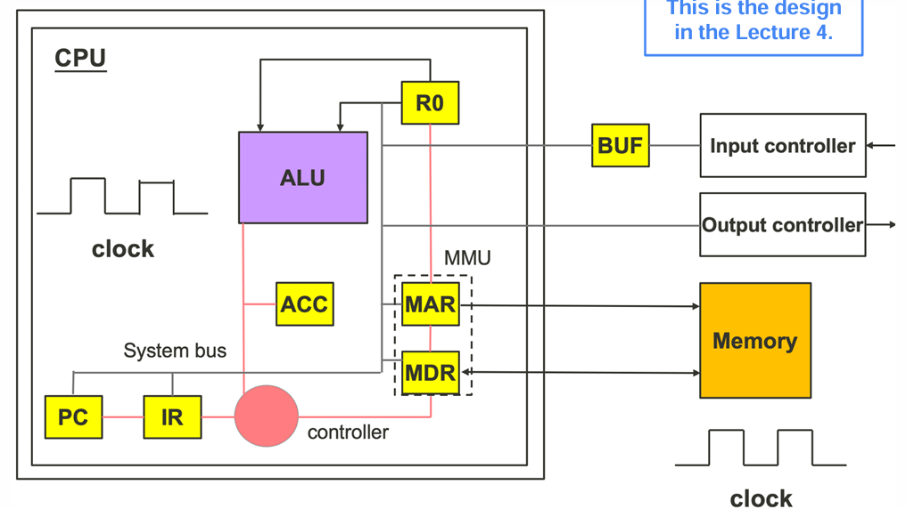
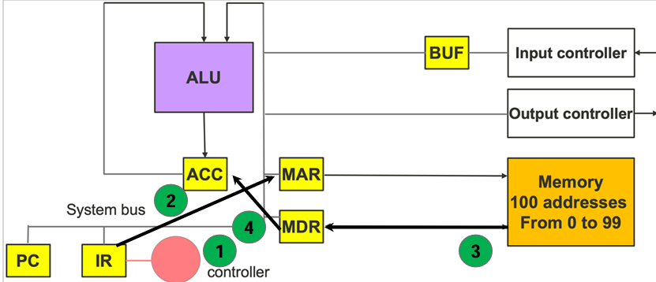
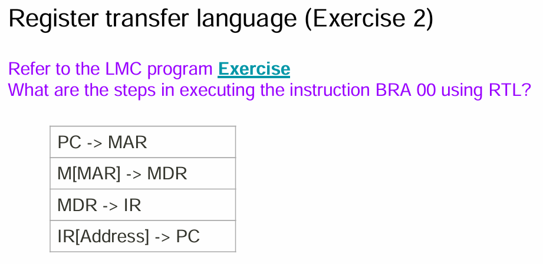
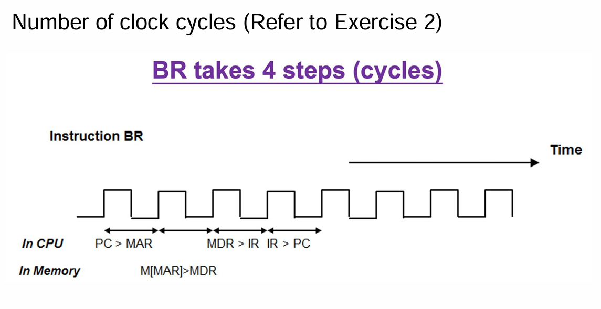

lecture 5.2
Programmable computer design

Cycle of instruction execution
LMC in operation is in a cycle
- Each cycle executes one instruction
- Each cycle has two parts
- Part 1: Fixed. Regardless of the instruction type
- Part 2: Dependent on the instruction type
Cycle of instruction execution (1st Part)
- Move data from the PC to the MAR
- Inform the memory system to load the next instruction
- The memory system gets the data and send to MDR
- The controller moves the data from MDR to IR
- Inform the memory system to load the next instruction

Cycle of instruction execution (2ndPart)
- The controller checks the IR and acts based on the instruction
- The controller moves the address of the instruction from IR to MAR
- The memory system gets the data and send to MDR
- The controller moves the data from MDR to ACC

Common data movement patterns
- PC to MAR (the address of next instruction)
- Memory System to MDR (memory read data)
- MDR to Memory System (memory write data)
- MDR to IR (the current instruction)
- MDR to ACC (data)
- ACC to MDR (data)
- MDR to MAR (memory address)
Example (LDA instruction)
- Controller moves the address in the PC to the MAR
- Memory system gets the data and sends it to the MDR
- Controller moves the instruction from MDR to IR
- The instruction contains opcode and address operand
- Controller signals the PC to increase by one
Controller examines the opcode and knows that it is an LDA instruction
- Controller signals the IR to send the address operand to MAR
- Also, it sets the R/W line of the memory system to “Read”
- The memory system reads the data and sends it to MDR
- Controller signals to MDR to move the data to the ACC
Note: After the last step, the computer operation returns to the first step to execute the next instruction
- Controller signals the IR to send the address operand to MAR
Notations in register transfer language
- Capitalized names: components
- ACC, R0, PC, IR, MAR, MDR
- Square brackets [ ]
- A part of a register or the address of memory
- IR[Address] is the content of the IR
- The (equals sign =) is the value of a component
- Memory[3] = 20
- The (-> sign) indicates data movement
- MDR -> Memory[3]
(Example 1)
- Fetch of an instruction
- Put the instruction into the IR
| Instruction | Description |
|---|---|
| PC -> MAR | Transfer the instruction address to MAR |
| M[MAR] -> MDR | Read the current instruction |
| MDR -> IR | Copy the instruction to IR |
| PC + 1 -> PC | Point to the next instruction |
(Example 2)
- Execute an instruction of ADD A, ACC
- Add data of memory address A to ACC
- Store the result of addition in ACC
| Instruction | Description |
|---|---|
| PC -> MAR | Send instruction address to MAR |
| M[MAR] -> MDR | Read the current instruction |
| MDR -> IR | Copy the instruction to the IR |
| PC + 1 -> PC | Point to the next instruction |
| IR[address field] -> MAR | Send the operand address A to MAR |
| M[MAR] -> MDR | Read the operand from memory |
| MDR + ACC -> ACC | Perform the addition and put it in the ACC |
(Example 3)
- Write down the RTL for an instruction ADD R0, 4. The instruction adds the content of Memory Address 4 to R0.
| Instruction | Description |
|---|---|
| PC -> MAR | Send instruction address to MAR |
| M[MAR] -> MDR | Read the current instruction |
| MDR -> IR | Copy the instruction to the IR |
| PC + 1 -> PC | Point to the next instruction |
| IR[address field] -> MAR | Send the operand address A to MAR |
| M[4] -> MDR | Read the operand from memory #4 |
| MDR + R0 -> R0 | Perform the addition and put it in R0 |
Benefits of RTL
- A clock signal controls the execution of RTL steps
- One clock cycle per step
- Work out the number of clock cycle per instruction
- Work out if RTL steps carried out in parallel
- RTL language can support micro-program
- CPU Control Unit operates according to RTL steps




Performance analysis of LMC
Number of execution cycles
| Mnemonics | Execution cycles | Memory operation |
|---|---|---|
| LDA | 7 | 2 |
| STO | 7 | 2 |
| ADD | 7 | 2 |
| SUB | 7 | 2 |
| INP | 5 | 1 |
| OUT | 5 | 1 |
| BRA | 4 | 1 |
| BRZ | 4 | 1 |
| BRP | 4 | 1 |
| HLT | 3 | 1 |
LMC Performance Analysis
- Number of execution cycles of each LMC instruction
- Calculate speed of LMC program execution
- Running time of a program
- Total number of instructions executed
- Composition of the instructions
- If the instructions take fewer cycles to execute, program execution can be faster
Execution speed of LMC program
Question: You have written an LMC program. In one execution of the program,
you counted the number of instruction executed: there are 300 LDA or STO
instructions, 120 ADD or SUB instructions, 20 BRA, BRZ, or BRP instructions, and
5 INP or OUT instructions. If the CPU clock rate is 100 MHz, calculate the time
taken to execute the program.
Answer: The total number of cycles is calculated from the summation of number
of cycles for each instruction.
of Cycles = 300x7 cycles + 120x7 cycles + 20x4 cycles + 5x5 cycles = 3045 cycles The clock rate is 100 MHz, which means 100 M cycles per second The time taken to execute the program is 3045/100M = 0.00003045 seconds